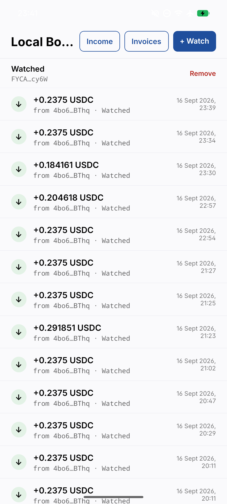

Local Books
Private income books for freelancers paid in stablecoins on Solana. The spreadsheet replacement, not a tax calculator.
v0.1 · Android · free and open source (MIT) · no account, no sign-in.

The whole loop, on one phone
- Watch your Solana address. The app pulls its payment history from public RPC and keeps it up to date while open.
- Invoice a client: line items, USDC or USDT, due date. Share it as a PDF with a Solana Pay QR code.
- Get paid. The client scans the QR and pays the exact amount. The next time the app checks, the payment is matched to the invoice by itself.
- Report. Every receipt is valued in GEL at the National Bank of Georgia's official rate for that day. Monthly income per client, and a CSV your accountant can verify line by line.
Three things it will never do
- Hold keys. Watch-only forever. It never signs or sends anything.
- Talk to our servers. There are none. No backend, no accounts, no telemetry. The only network traffic is Solana RPC and the NBG rate endpoint.
- Promise real-time. It checks when you open the app, and while it is open.
What is in v0.1
Encrypted on the phone
Your books live in an SQLCipher database keyed from the device keystore. Nothing leaves the phone unless you export it.
Reference matching
Payments made through the QR carry the invoice reference and match automatically. Plain transfers show up in the ledger for you to decide on.
Defensible valuation
Each row records the rate, its source, and its date. Receipt days follow the Georgian calendar, the same one the rates use.
Honest sync
Progress is shown as real counts, never an invented percentage. Rate limits and outages say what happens next.
Known limitations
USDC and USDT income only, valued in GEL. No background sync while the app is closed. Your books are tied to this phone's keystore, so keep the CSV export as your portable record. The full list is in the release notes.
See it work
Demo video: coming with the v0.1 release.